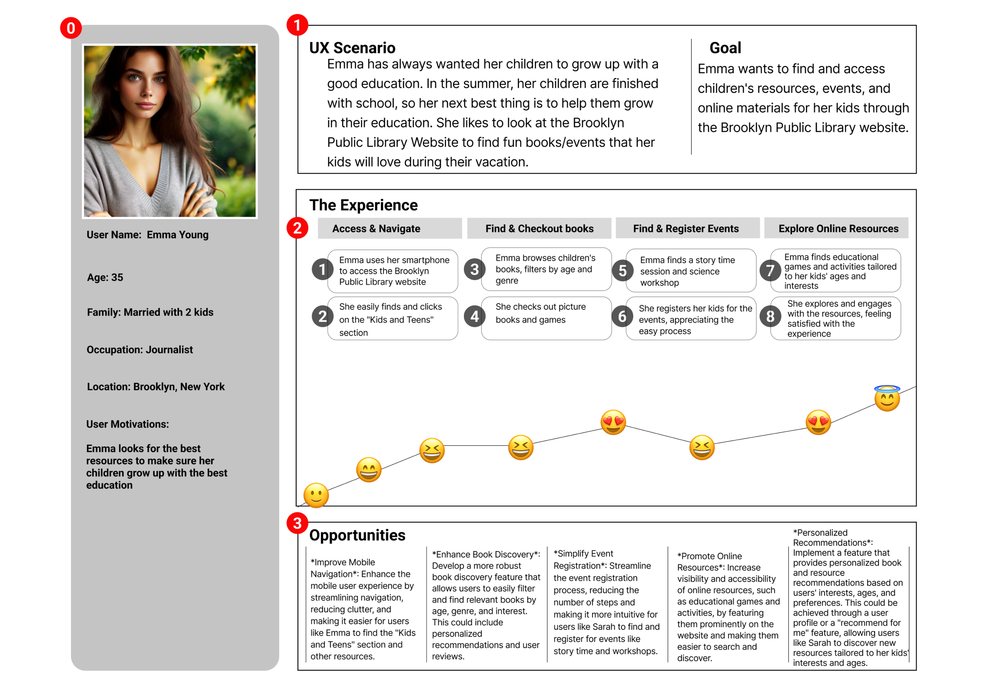
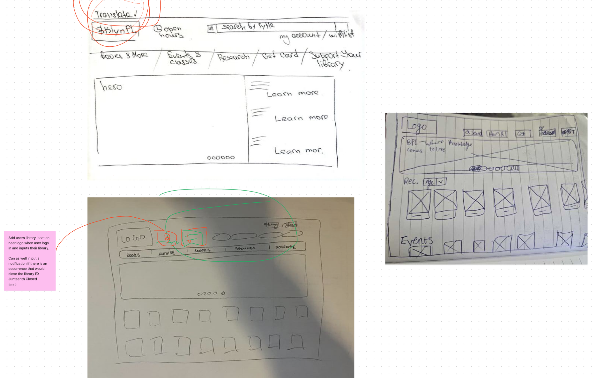

Non Profit Project
Brooklyn Public Library
Project Overview
We are redesigning the Brooklyn Public Library’s Website. Our initial examination of the web design found navigational redundancy, confusing filter systems and overall inefficiencies.
Our redesign sought to address these perceived deficiencies through clear navigation, seamless search functionality and personalized recommendations.
-Research. Comprehensive analysis of the current website.
-User Analysis and Insights.
-Information Architecture and Redesign.
-Prototyping and Testing.
-Project Results.
One common theme we discovered during user interviews regarding the existing Brooklyn Public Library (BPL) website was the difficulty navigating the filters during search and viewing the extensive catalog to find a book or other media of interest.
User Analysis and Insights
Following the initial user interviews on the current website, we conducted an affinity mapping exercise to categorize and theme the users' observations.
I Wish, I like, What if process helped us to identify what users like, wish and want
We conducted a comprehensive competitive analysis, creating three SWOT analyses to scrutinize our direct and indirect competitors. This exercise enabled us to thoroughly examine their strengths and weaknesses, uncover potential opportunities, and identify threats, ultimately allowing us to learn from their strategies and inform our own design decisions.

Then we’ve created a user Journey Map based on our user persona
The architecture design process for the Brooklyn Public Library involved a thorough analysis of the site, user needs, and community context. Sustainable design principles were incorporated throughout the project to minimize environmental impact and promote energy efficiency.
Team Sketches
After conducting usability testing on our high-fidelity prototype, we identified several areas for improvement. We plan to address the following key issues:
- Fix the spacing issue when closing “Place Book On Hold”
- add a flip effect to book covers on the book catalog page to provide a more engaging and informative experience.
- Add a confirm choices or update feature when selecting filters, ensuring users can easily refine their search results and view updated book lists.
By addressing these user feedback suggestions, we aim to enhance the overall user experience and create a more intuitive and user-friendly design.
Key Takeaways
1. User-centered design: The redesign prioritizes user needs and goals, creating an intuitive and seamless experience.
2. Improved navigation: The new design streamlines navigation, making it easier for users to find what they're looking for.
3. Enhanced search functionality: The search functionality is now more intuitive, user-friendly, and efficient, allowing users to quickly find relevant books and resourses.
4. Personalized recommendations: The design incorporates personalized book recommendations, enhancing user engagement and discovery.
5. Accessibility and usability: The redesign prioritizes accessibility and usability, ensuring that the website is inclusive and user-friendly for all patrons.